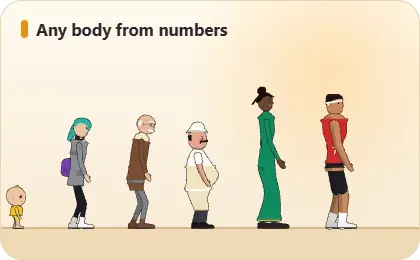
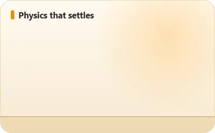
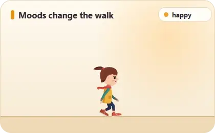
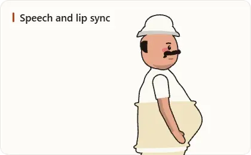
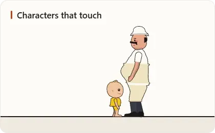
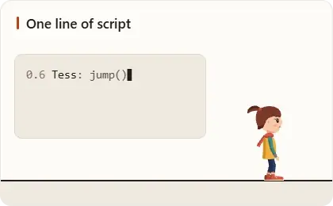

CharAI: 2D character animation engine and AI agent skill
CharAI is an open-source 2D character animation engine and agent skill. An AI agent (or a person) draws any human as a small data file and directs it with a short .char script; the engine supplies skeleton, motion, physics, moods, lip sync and speech, two-character contact and props. Characters only: the host supplies the scenery. Side view only in this release.






Get started in three steps
Needs Node 18 or newer. For pictures and video also Chrome or Edge, and ffmpeg for MP4.
With Claude Code (the skill). Only Claude models have been tried.
git clone https://github.com/riponcm/CharAI .claude/skills/charaicd .claude/skills/charai && npm install- Ask Claude Code: “Use CharAI to draw a character, a tall grandmother with a silver bun and a green cardigan, and show me her cast sheet.”
By yourself, with the engine.
git clone https://github.com/riponcm/CharAI && cd CharAI && npm installnode tools/check.cjs examples/hello.charnode tools/render.cjs examples/hello.char hello.mp4and watch eight seconds of a girl walking in and waving.
Your own page, a video editor, making a character, and what to do when a step fails: Getting started.
With and without CharAI
"Without" means an agent hand-codes each film; the measured baseline is the Lemo-Opuscar style-library workflow.
| Without CharAI | With CharAI | |
|---|---|---|
| A character | re-coded inside every film | one skin file of 1.3 to 2.2 KB, reused unchanged |
| Two 30-second episodes, Claude Sonnet | 667,202 tokens, 74 minutes | 425,057 tokens, 25 minutes |
| Two 30-second episodes, Claude Opus | 532,368 tokens, 39 minutes | 477,333 tokens, 33 minutes |
| A new action | key poses inside the film's code | a 0.4 to 0.7 KB file, about 8,200 Sonnet tokens |
| On a smaller model | cost more than the larger model | the cheapest run of all |
| Changing one moment | regenerate; the rest may change | edit one script line and render again; only what follows from the edit changes |
| A scenery-rich one-off film (silhouette, Opus) | 318,987 tokens, 24.7 minutes, better-looking | 391,611 tokens, 35.7 minutes: CharAI lost |
| Views and 3D | anything the agent can code | side view only, no 3D |
Single runs; the baseline's setup and the engine's build cost are not counted. Full table, when to use it and when not.
Key facts
- Apache 2.0. No runtime dependencies: one script file,
dist/char.js, and a<char-stage>web component. - Every frame is a pure function of time (
seek(t)), the contract HyperFrames, Remotion and GSAP timelines use. Snippets for those three are untested; two plain-HTML host examples are tested. - Exports MP4, transparent WebM and ProRes, PNG sequence and animated SVG.
- Built with Claude Code. Only Claude models have been tried.
- Measured costs, including a test it lost, are in the evidence.
Documents
- docs/GETTING-STARTED.md
- SKILL.md
- CONTRIBUTING.md
- docs/CHARACTER.md
- docs/AUTHORING.md
- docs/ACTIONS.md
- docs/HOSTS.md
- docs/COMPARISON.md
- docs/EVIDENCE.md
- docs/KNOWN-ISSUES.md
Frequently asked questions
What is CharAI?
CharAI is an open-source 2D character animation engine and agent skill. An AI agent or a person draws any human as a small skin data file and directs it with a short .char script; the engine supplies skeleton, motion, physics, moods, lip sync, two-character contact and props.
How do I animate a character with Claude Code?
Put this repository in .claude/skills/charai/ and ask Claude Code to draw a character or write a film. It reads SKILL.md, follows the document for the job, then loops: write, run the check (node tools/check.cjs films/x), look at the picture, fix.
Does it work with HyperFrames, Remotion or GSAP?
The frame is a pure function of time (seek(t)), the contract those timelines use, and docs/HOSTS.md has a snippet for each. Those three snippets are untested; HyperFrames is "snippet provided, not yet tested". Two plain-HTML host examples in examples/ are tested.
How does it compare with Lemo-Opuscar?
Lemo-Opuscar is a style library for code-made films. On two 30 s episodes on Sonnet, CharAI used 425,057 tokens against 667,202; on a 30 s silhouette film on Opus it lost, at 391,611 against 318,987, and looked worse. These are single runs, and CharAI is meant to complement style libraries as their character layer.
Why use CharAI when new models can animate freehand?
Code-made animation by frontier models is improving fast, but those films are generated from scratch each time, so the cost is paid again for every film and every change, and characters are re-drawn each time. CharAI does the repeated part once, which is what the comparison table measures. It has been tried only with the Claude models named in the evidence page and has not been compared with any unreleased or newer model (see docs/COMPARISON.md, November 2026).
Which models built it?
It was built with Claude Code. Claude Fable 5.2 was architect and reviewer, Claude Opus 5.5 wrote the engine code, and Claude Sonnet wrote characters, actions, scenes, tools and packaging from the documents alone. Only Claude models have been tried.
What does it cost in tokens?
Claude Sonnet wrote a character in about 41,800 tokens, an action in about 8,200, and a 20 s two-character scene in 98,844. Each figure is one run; see docs/EVIDENCE.md.
What can't it do?
Side view only (no three-quarter or front view), flat cartoon styles, no scenery, no 3D, simple hands, and spring physics for hair and cloth rather than simulation. Lip sync matches the speech but is not polished. Known faults are in docs/KNOWN-ISSUES.md.
Does it need an artist or motion capture?
No. The agent writes a skin as numbers plus a few SVG paths, and motion comes from the engine's actions, which are a few key poses each. There is no library of ready-made characters; a few worked examples are in skins/.
What licence is it under?
Apache License 2.0; see LICENSE and NOTICE. It has no runtime dependencies.
How do I add a new action?
Write a small file of key poses in body terms, register it in CharActions, and check it with node tools/actioncheck.cjs actions/x.js. See it with node tools/action.cjs x out.png. The format is in docs/ACTIONS.md.
Contribute
Draw a character, add an action, write an example film, fix a known issue, or try a host. Start with CONTRIBUTING.md; share what you make in Discussions.